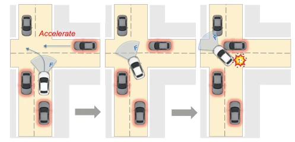
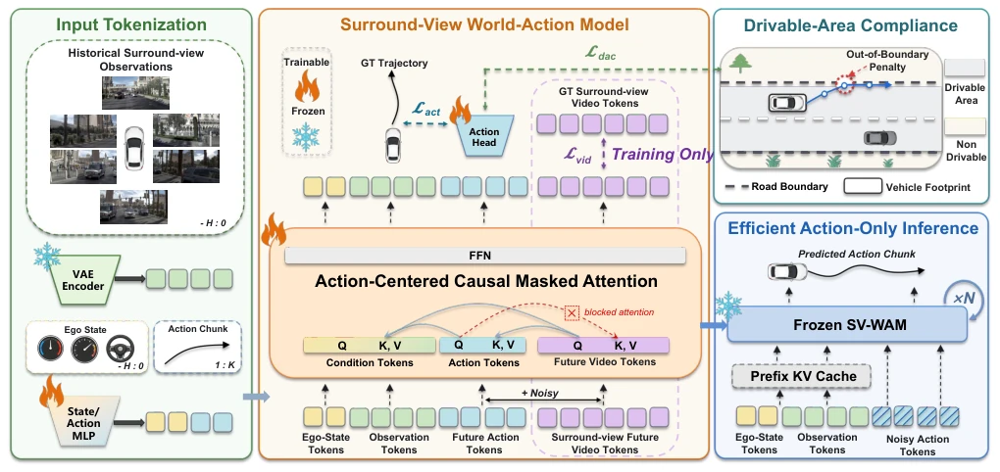
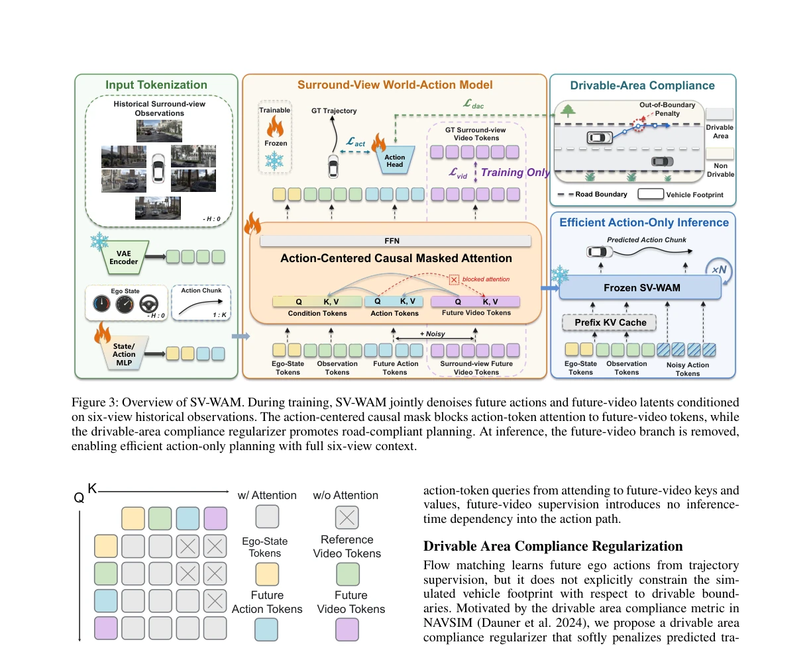
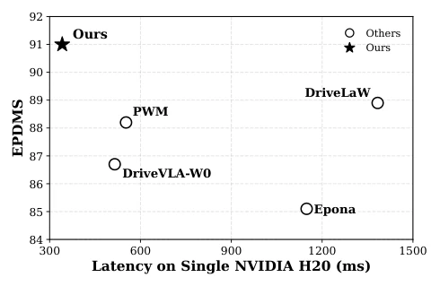
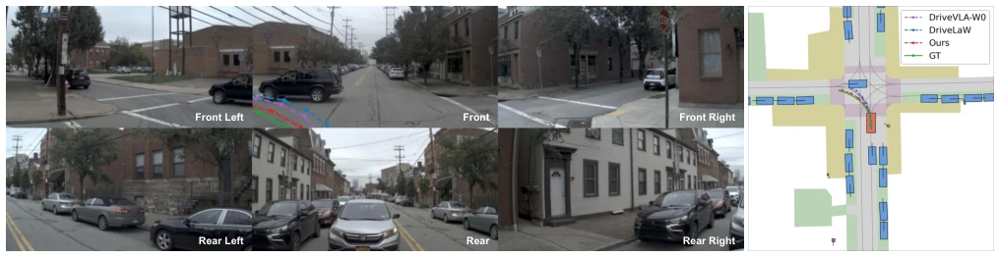
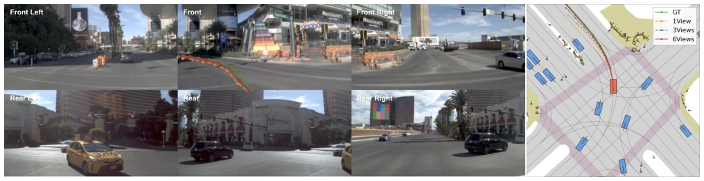
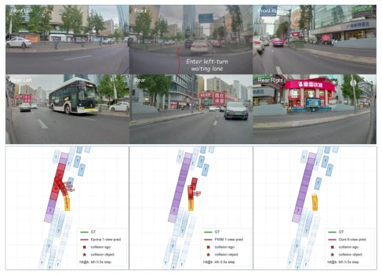
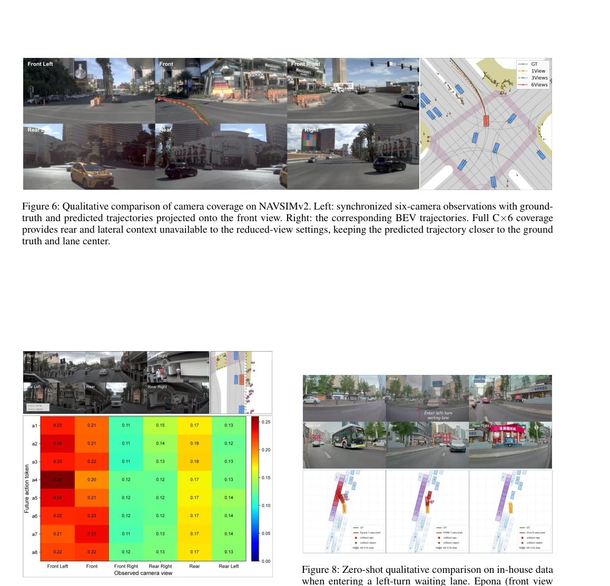
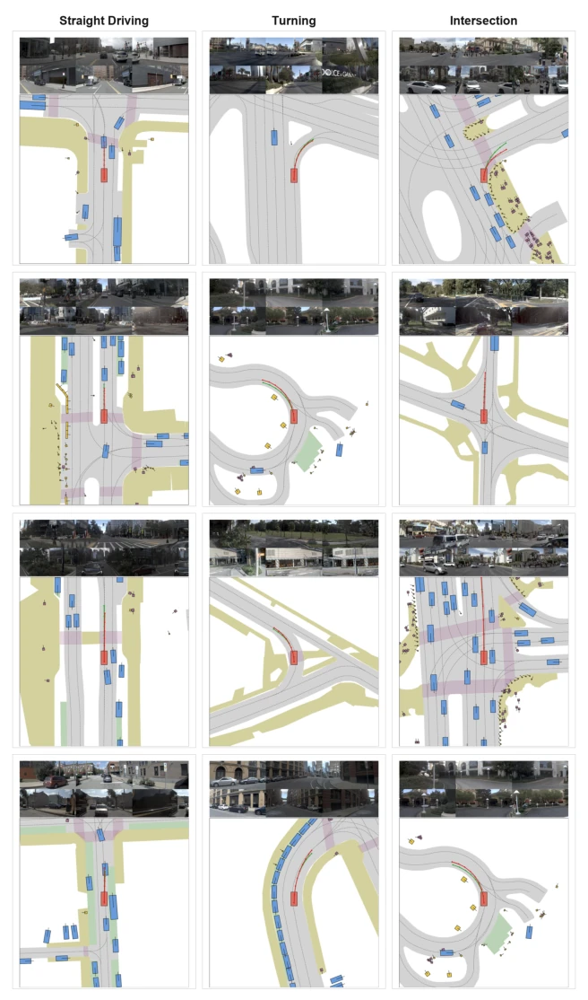
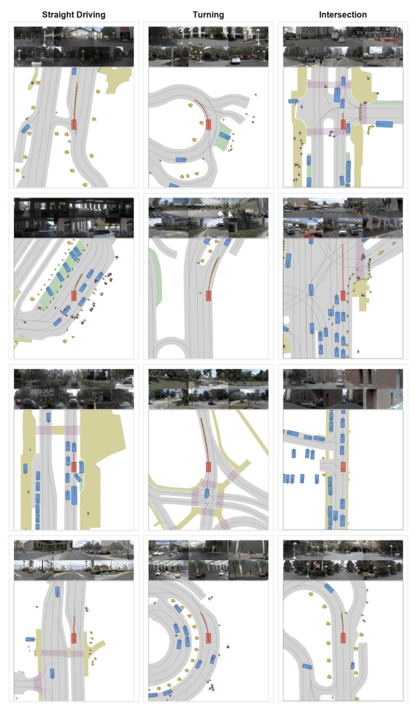

This paper attempts to find a balance between "full-view" and "low-latency", serving as a remedy for the "wanting both" dilemma of autonomous driving world models (WM). SV-WAM's core maneuver is downgrading future video prediction from "inference output" to "training supervision", forcibly cutting off the dependency of action tokens on video tokens using a causal mask (causal mask), and directly discarding the video branch during inference. This approach is indeed clever, retaining the spatial perception advantages of six cameras while avoiding the compute explosion of generating future videos. However, since videos are not viewed during inference, isn't the title of "world model" a bit hollow? After all, it does not truly "imagine" future frames for decision-making, but merely borrows the gradients of the video branch to regularize the action distribution. Additionally, although claimed to be efficient, the 342ms latency on a single H20 card still raises questions for scenarios with extremely high real-time requirements, especially compared to monocular solutions. Overall, it is a very pragmatic engineering improvement, but the theoretical "world model" purity may be compromised.
Autonomous driving end-to-end planning faces a classic contradiction: reliability requires surround-view (surround-view) to cover blind spots, such as side-rear vehicles during lane changes and merging; but efficiency requires low latency, causing many latest world models (such as Epona, PWM, DriveVLA-W0) to be forced to downgrade to monocular input during inference. This design poses huge risks in safety-critical scenarios, as shown in Fig. 2, where monocular models easily ignore side-rear dynamics. Existing work such as DriveLaW unifies planning and video generation, but still requires generating videos during inference, resulting in high computational overhead. SV-WAM aims to solve this pain point: how to avoid the expensive multi-view future video generation overhead while retaining six-camera spatial coverage? This requires a mechanism where video prediction serves action learning during training without dragging down inference speed.

Figure 2: Motivation for surround-view planning. For exam- ple, at unsignalized intersections, front-view-only planners may lack sufficient lateral context and make unsafe decisions in complex traffic.
The overall process of SV-WAM is divided into two stages: training and inference. During training, the model utilizes a frozen 3D VAE encoder to encode six streams of historical videos into latents, combined with ego-vehicle state and action sequences, performing joint denoising through a Transformer backbone (Wan2.2-5B). The core innovation lies in the "Action-Centered Causal Mask" (Action-Centered Causal Mask), as shown in Fig. 4, which allows video tokens to attend to action tokens, but forbids action tokens from attending to future video tokens. This enables the model to utilize future video dynamics as dense supervision signals to optimize the action distribution during training, while during inference, since the causal dependency is cut, the video branch can be directly discarded, retaining only action prediction. Additionally, the paper introduces a differentiable "Drivable Area Compliance Regularizer" (Drivable Area Compliance Regularizer), applying penalties for boundary violations by calculating the signed distance from vehicle footprint corners to drivable area boundaries, as shown in Fig. 3, enhancing planning safety. In the inference stage, the model inputs only historical observations and states, requiring no video generation, significantly reducing latency.

Figure 3: Overview of SV-WAM. During training, SV-WAM jointly denoises future actions and future-video latents conditioned on six-view historical observations. The action-centered causal mask blocks action-token attention to future-video tokens, while the drivable-area compliance regularizer promotes road-compliant planning. At inference, the future-video branch is removed, enabling efficient action-only planning with full six-view context.

Figure 4: Action-centered causal mask. Action tokens at- tend to ego-state and reference-video tokens but are blocked from attending to future-video tokens, whereas future-video tokens can attend to action tokens. This asymmetric depen- dency supports future-video co-training without making ac- tion prediction dependent on future-video tokens at infer- ence.
Experiments are mainly conducted on NAVSIMv2 and nuScenes. In the closed-loop planning of NAVSIMv2, SV-WAM uses six-camera input and achieves a maximum EPDMS score of 91.0, outperforming baselines such as EponaV2 and DriveLaW. Despite high input dimensions, the inference latency on a single NVIDIA H20 card is only 342ms, far lower than PWM or DriveLaW requiring video generation (Table 5). In the nuScenes zero-shot transfer test, the average L2 error is 0.89m, collision rate is 0.16%, performing better than other unfine-tuned world models. Ablation studies show that Future Video Supervision (Video Sup.) boosts EPDMS from 83.1 to 87.7, Drivable Area Regularizer further raises it to 90.1, and final fine-tuning reaches 91.0 (Table 3). The effectiveness of the causal mask is also verified; after removing the mask, latency spikes to 848ms (Table 4).

Figure 1: Efficiency-performance overview on a single NVIDIA H20 GPU (preprocessed-input-to-trajectory la- tency). SV-WAM reaches the best NAVSIMv2 EPDMS at the lowest latency despite using six-camera input.

Figure 5: Qualitative comparison in a challenging turning scenario from NAVSIMv2. Left: current six-camera observations. Right: the corresponding BEV visualization. SV-WAM predicts a trajectory that more closely follows the ground truth and better aligns with the road geometry than DriveLaW and DriveVLA-W0.

Figure 6: Qualitative comparison of camera coverage on NAVSIMv2. Left: synchronized six-camera observations with ground- truth and predicted trajectories projected onto the front view. Right: the corresponding BEV trajectories. Full C×6 coverage provides rear and lateral context unavailable to the reduced-view settings, keeping the predicted trajectory closer to the ground truth and lane center.
其他图片Other Figures

Figure 8: Zero-shot qualitative comparison on in-house data when entering a left-turn waiting lane. Epona (front view only) collides with the rear-left vehicle; PWM avoids the rear-left vehicle but its zero-shot trajectory drifts substan- tially from the ground truth; SV-WAM remains closest to the ground-truth trajectory.

Figure 7: Action-to-view attention in a left lane-change, av- eraged over the 30 transformer blocks. The future action tokens attend most strongly to the front-left and rear views, where the neighboring vehicle that constrains the maneuver appears, evidencing that the planner exploits surround-view input.

Figure 9: Representative high-scoring planning examples grouped by maneuver type. Columns are straight driving, turning, and intersection scenarios; each column shows four examples. Green curves denote the ground-truth trajectories, and red curves denote the predicted trajectories.

Figure 10: Additional high-scoring planning examples grouped by maneuver type, four per column.